My Skills
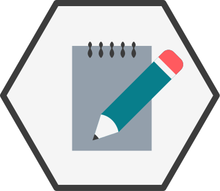
Sketching
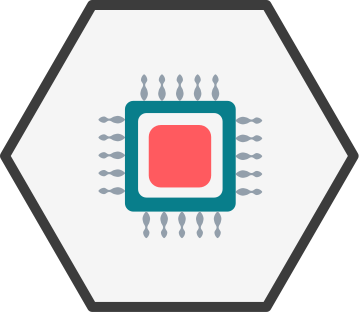
Electronics
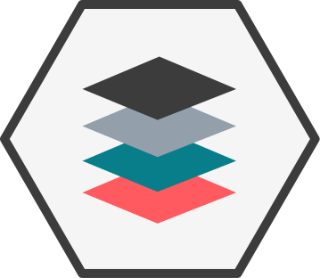
Material Design
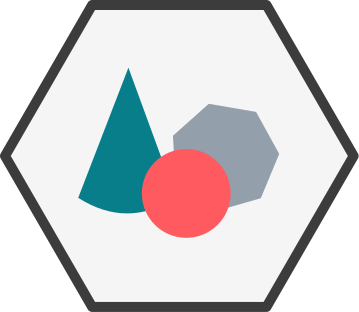
Model Making
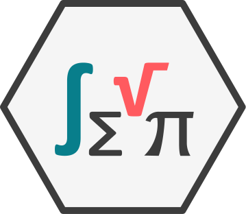
Calculations
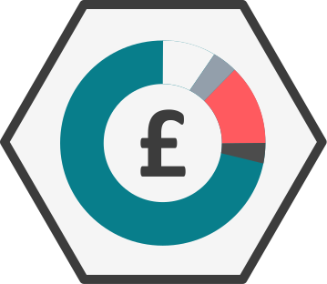
Budgeting
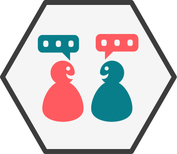
Customer Interaction
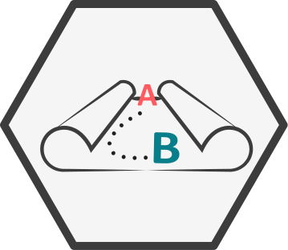
Planning
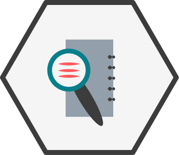
Research
My Projects
Electromagnetic Kettle
A kettle that uses electromagnets as a new more efficient form of water heating
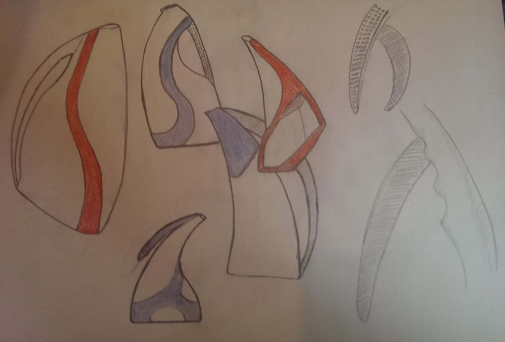This was the first major project we were tasked with, at University. The brief was to make a product that incorporated a heating element. I decided to make a kettle because I had an interesting idea that I wanted to explore in greater detail: using electromagnetic conduction as a new way of efficiently heating water.
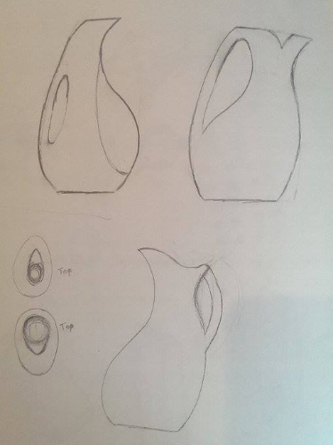
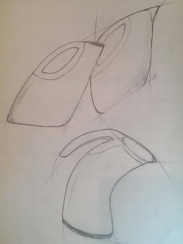
Most commonly, kettles in a modern-day kitchen use an ordinary conduction system to heat the water. Typically, there is a copper coil or plate around the bottom of the kettle which heats up when an electrical current is passed through it. The energy released would heat the surrounding water which in turn would start a flow in the water due the change in energy and density. The hot water would rise to the top and the denser, colder water would be pushed to the bottom creating a flow process until all the water has reached its boiling point.
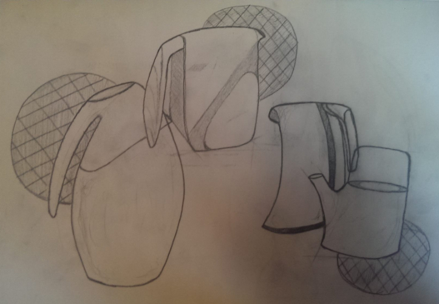
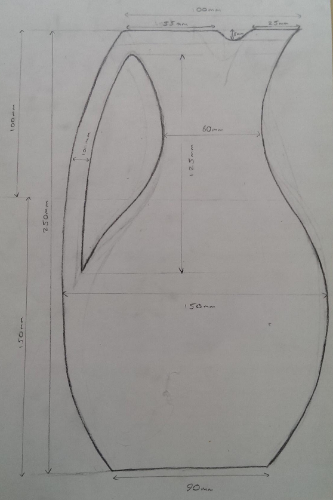
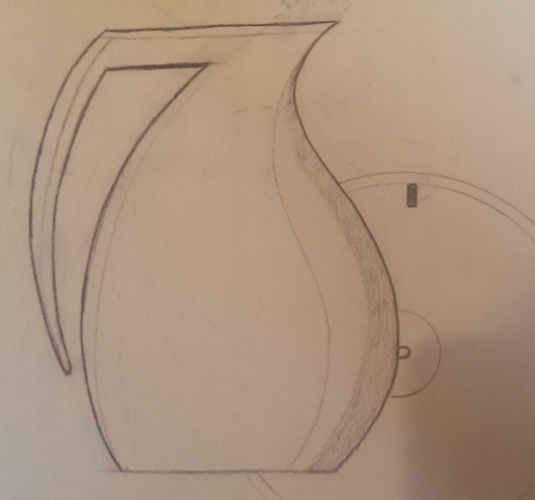
After much research and testing I found that electromagnetic heating would be a much more efficient option over the traditional conduction heating method. A significantly smaller amount of energy is lost in an electromagnetic circuit; this means less electricity will be required to heat the same amount of water. My design had a mild steel rod running through the centre of the kettle, this allowed the rod to be heated much quicker than a coil and the large surface area allowed more water to be heated at one time.
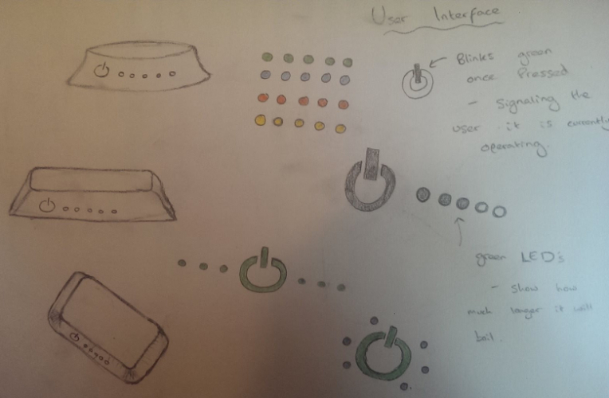This product is a kettle that requires a smaller amount of energy to heat up a body of water, and it does so faster than current alternative options.
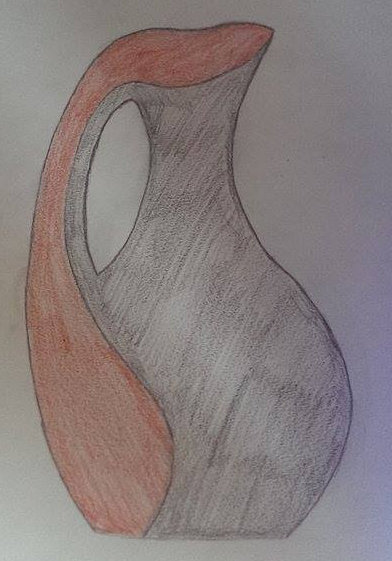
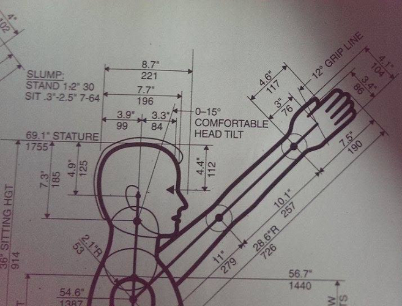
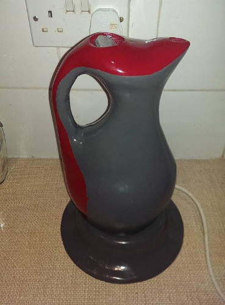
Skills used
Small Projects
A series of 1 week long projects
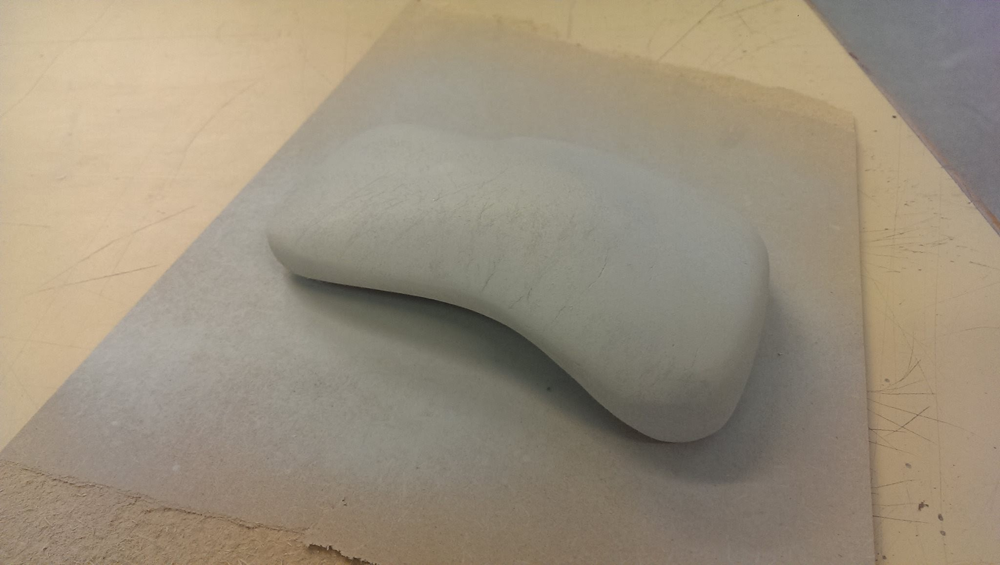During the first few weeks of starting University were a series of small assignments to introduce us to the course and the equipment available to us.
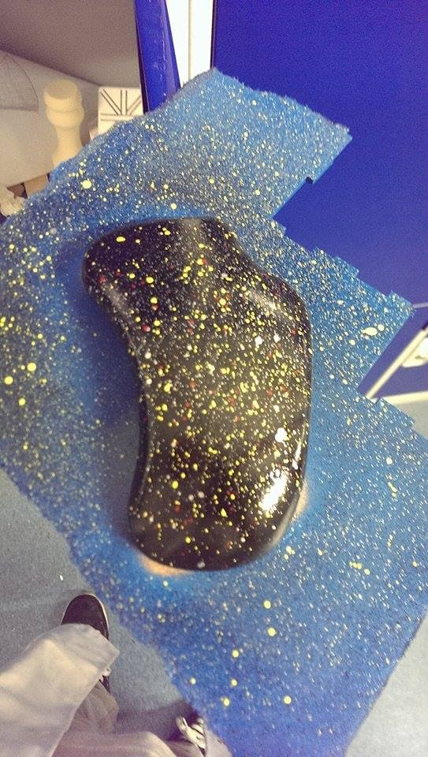Assignment – design a computer mouse: I used many different model making techniques to make a sleek and smooth free-form shape. The best result was from carving the shape of the mouse out of Styrofoam, sealing the surface of the model, covering it in a thin layer of clay and smoothing until perfect. After setting in the oven it was ready to have the final finishes, such as further smoothing, priming, spray painting and flocking. After the first model, I created a second, more refined version eliminating some of the things I think needed improving from the first design.
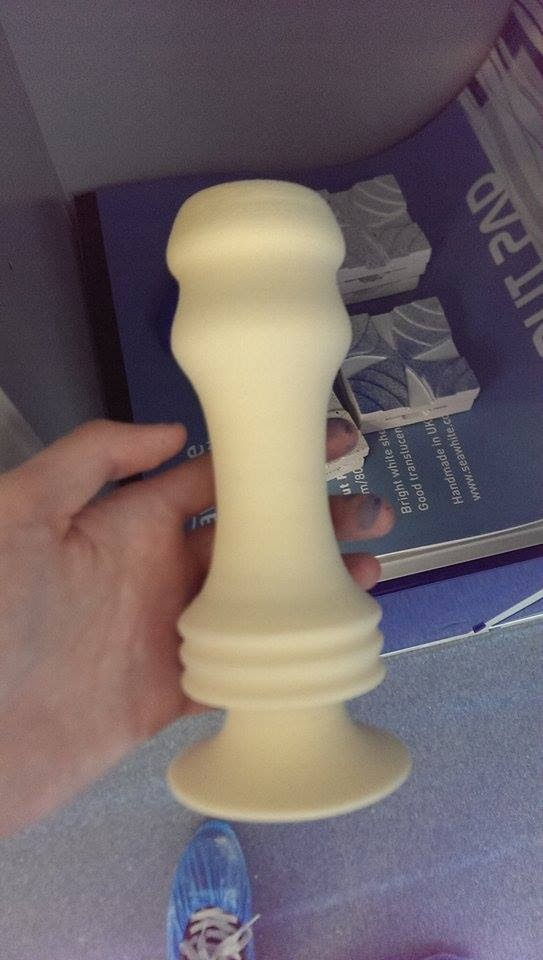Assignment – create a candlestick: to introduce us to Solidworks and how to use a lathe.
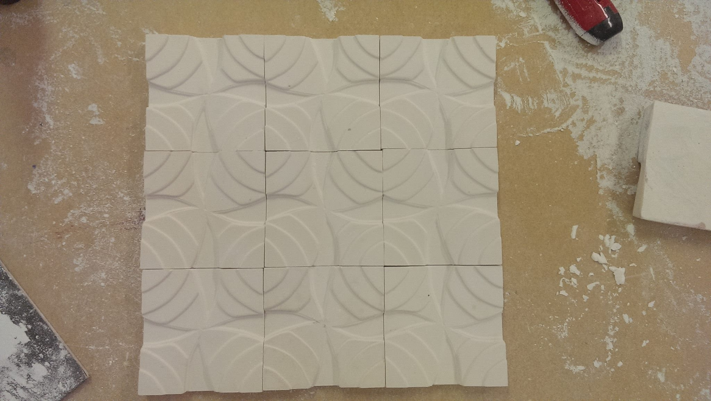Assignment – create a bathroom tile: I conducted research on patterns because I wanted the wall tiles to be interesting, this led me to create 3D tiles. I created a die by making the pattern out of MDF and vacuum forming over it to enable ease of reproduction.
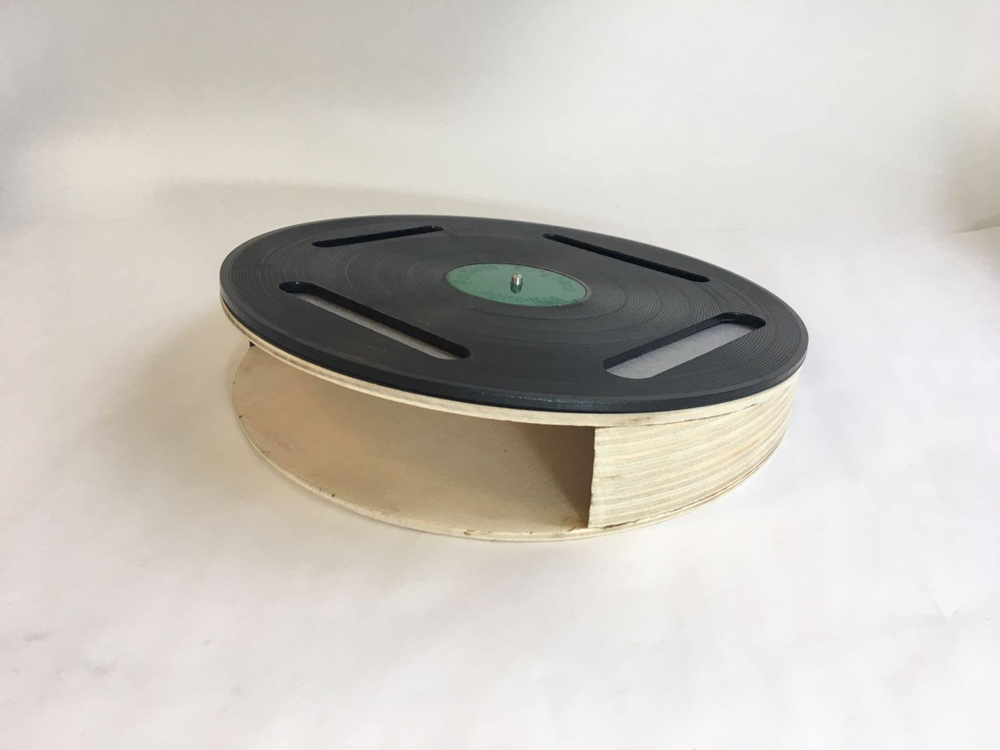I was also involved in a group project - the brief was to create a promotional gift that would fit through a letterbox. We decided to create a passive amplifier for a phone. We thought this would be a great promotional gift because there was a festival in Brighton called Wildlife and we had the idea that people would be able to stay in their tents and play music when they had finished with the festival music. However, a big issue is that phones are normally too quiet. This amp allows them to increase the maximum volume of the music playing without the use of any electronics. Most sound is lost due to the sound waves bouncing off objects and spreading all around the room, this shape forces the sound waves down its chamber and releases them in each direction which makes it sound significantly louder. The record on top has been designed to accommodate a variety of different-sized phones.
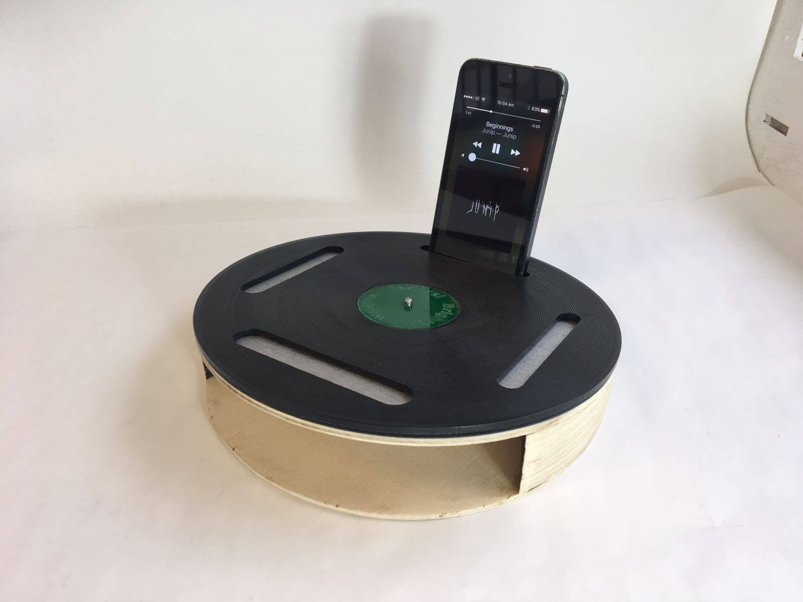
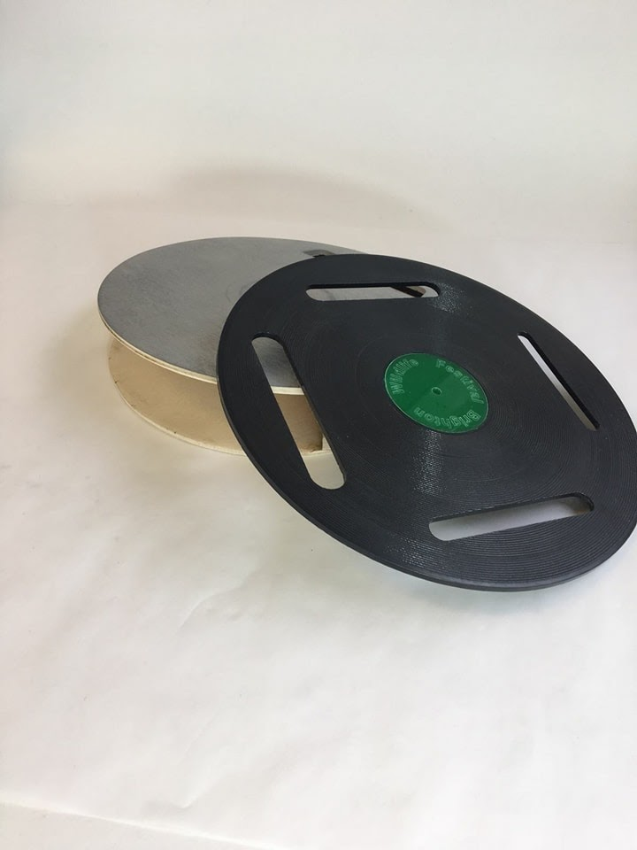
Skills used
Stroke Rehabilitation / Stress Ball
A stress ball that adapts to the user and helps push them to become stronger.
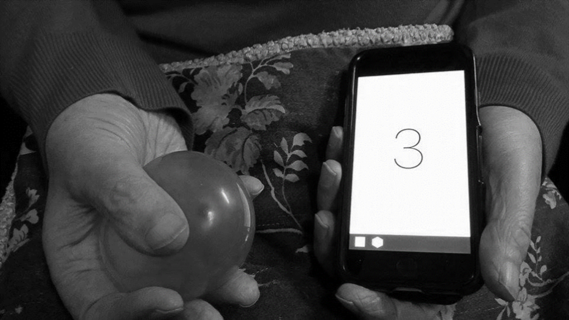

For my second-year project, I was assigned a brief to make a product that would help the aging community. My Grandfather had recently suffered a severe stroke so I put all my passion into making something that would benefit people in a similar situation.
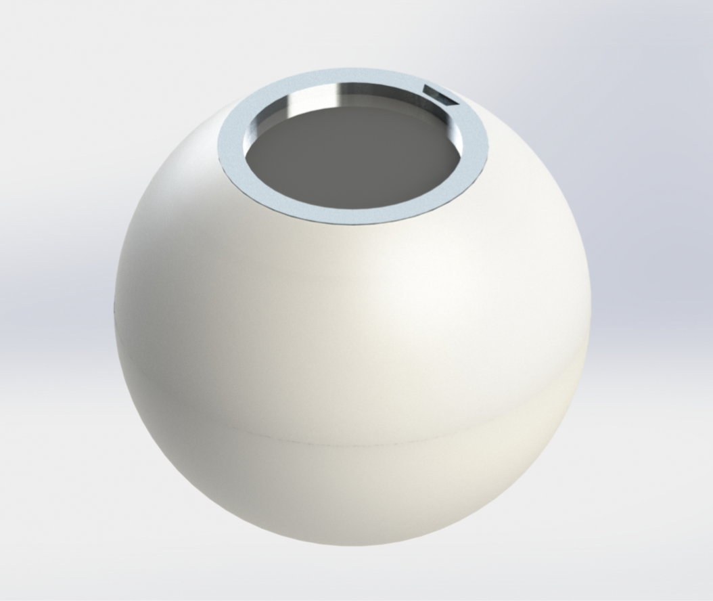 After much extensive researching and controlled observations, I realised that most people that suffer from a stroke lose a great deal of dexterity in their hands. This prevented them from being able to do, what was previously considered, very simple tasks such as holding cutlery or a pen, typically leading to frustration and anger. I wanted to create a product that would help them recover their strength. 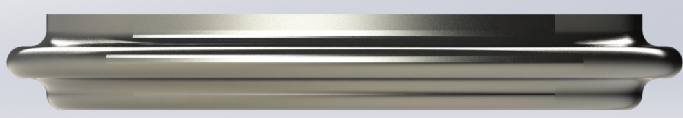Through my research, I discovered that the squeezing motion was the easiest and most soothing motion commonly used in rehabilitation therapy for hands. This is what led me to create the stress ball.
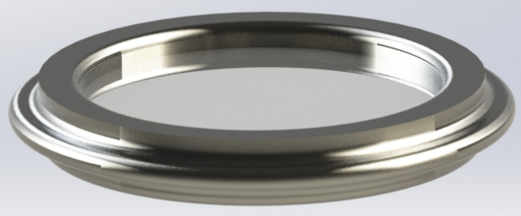My stress ball is unique for two reasons;
- The external ball is made from thin silicone rubber and the interior is made from Ooblek. Ooblek is a non-Newtonian fluid - essentially the greater the force being applied to it - the harder it becomes to apply force. I decided this was a really exciting idea as the ball is constantly adapting to the user. Regardless of the user’s baseline strength, the ball will react accordingly; if at first the user struggles to clench their fist together the material will act like water and as their strength improves it will become more dense and viscous – always allowing useful exercise to be achieved.
- There is also a pressure pad inside the ball that measures how hard the ball is squeezed. The information is displayed in an easy-to-read and understand manner. This special feature encourages the user to get a greater score, as if it was a game. As they are encouraged to improve their score, the process required by the user, is encouraging recovery to their muscles.
This product can be used by anyone, no matter their strength or ability. The ball will constantly adapt to the specific user making it a perfect recovery tool that I believe could help thousands of people.
Skills used
Coffee Pots
Magnetically connected coffee containers for coffee lovers
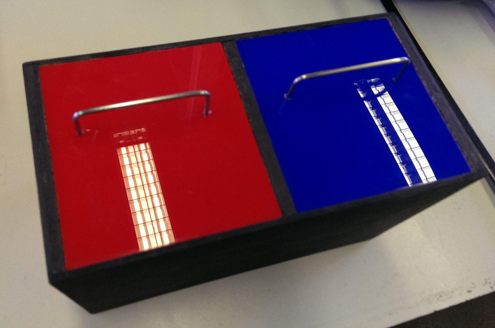During my AS level, a client gave me a brief to make a cheap, modern coffee container that could be expanded with more units.
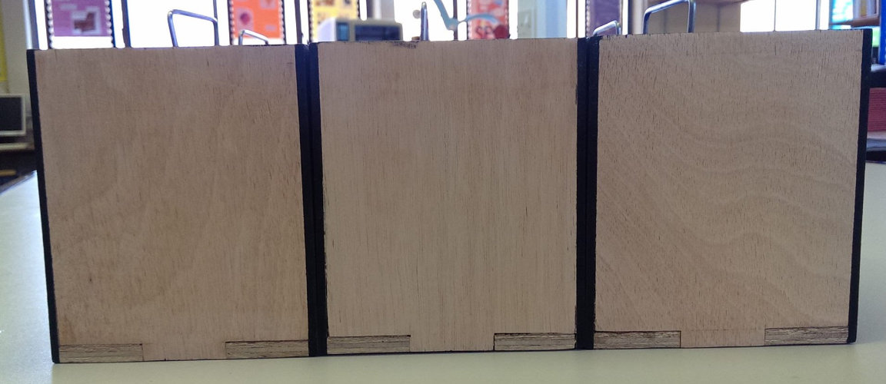Each container had two drawers which were lined with vacuum formed ABS to prevent stains on the interior and making it easy to clean.
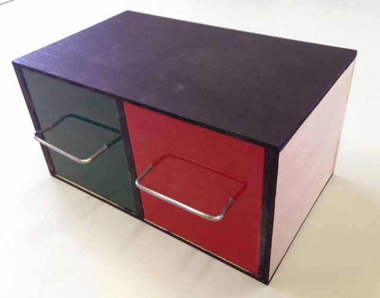A small magnet on the top and sides of each box allowed them to attach easily to another unit. The system could be expanded horizontally or vertically as the user required.
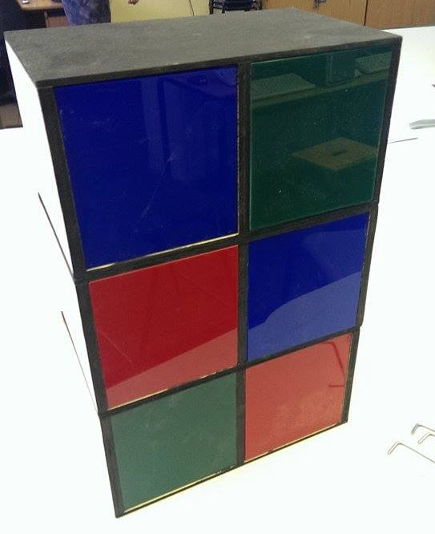The boxes were made from plywood due to its strength, visual aesthetics and cost effectiveness. It was likely that these boxes would be knocked and potentially fall, so to make them sturdier I used finger joints to connect each side together also creating an aesthetically pleasing effect.
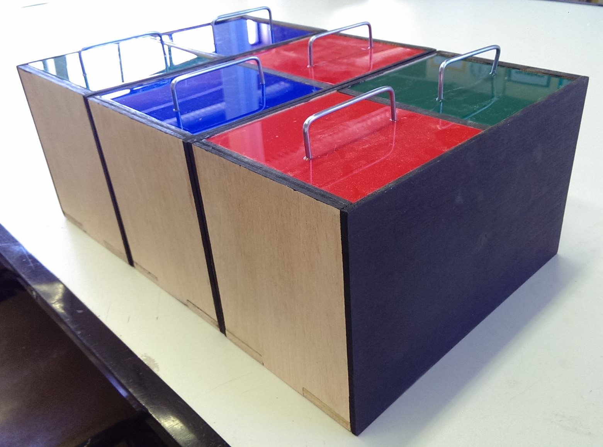The different coloured acrylic fronts create a vibrant look. The user can create an original design using the colours in their own personal pattern to fit into their own kitchen design.
Skills used
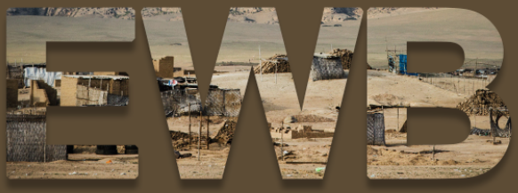
Engineers Without Borders
A surf shack designed to run using sustainable energy and attract tourism to a poor country.
For this challenge, we were placed into groups and worked together to create a solution to one of Lobitos’s (a small poor district of approximately 1,600 people in Peru) major issues. Lobitos is a fantastic surfing location due to the constant waves and climate, the people of Lobitos earned their income either through the tourists that come to visit for the surfing spot, or fishing.
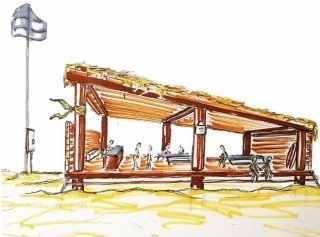We decided on creating a Surf shack for the tourists to visit while they enjoyed their stay., A place where they can kick back and relax with cold drinks being served to them. This seemed like an excellent opportunity for the people of Lobitos by creating a more tourist friendly environment they would attract more attention and receive more visitors, which in turn leads to more money which they could re-invest into their community.
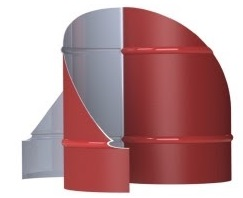 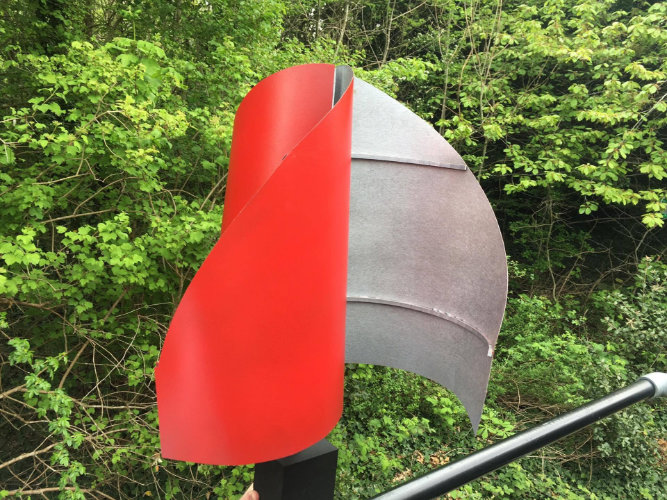The district currently has very poor infrastructure and the few facilities they have frequently break down, this meant clean water and electricity were not always available which would cause major issues for the community. However, as the community earns more money they should be able to improve and fix the issues plaguing them.
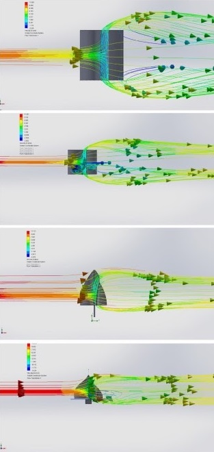
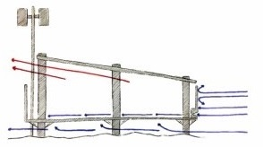
Due to the electricity being extremely unreliable we decided to create an independent surf shack with its own sustainable energy. Lobitos is known for having strong winds so we decided to harness that using vertical access wind turbine. The system we created is simple to set up and due to the district's history of oil mining there is more than enough materials littering up the streets to create as many turbines as required. The energy produced would lead to a fridge keeping drinks cool for surfers to enjoy. The shape and orientation of the shack is designed to reduce the strong winds from the coast in a gentle breeze that runs through cooling off the guests.
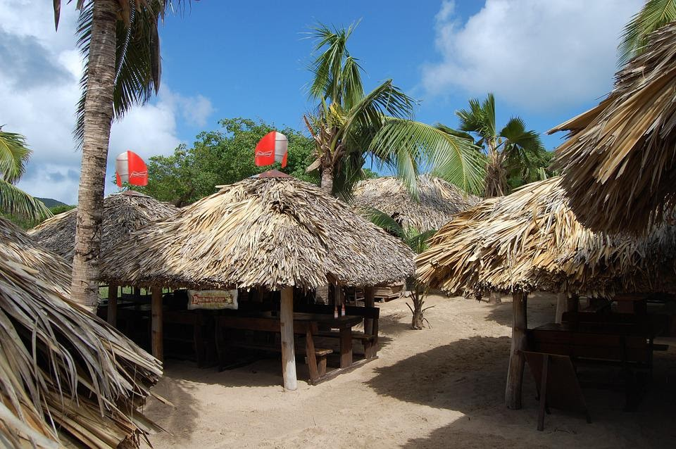
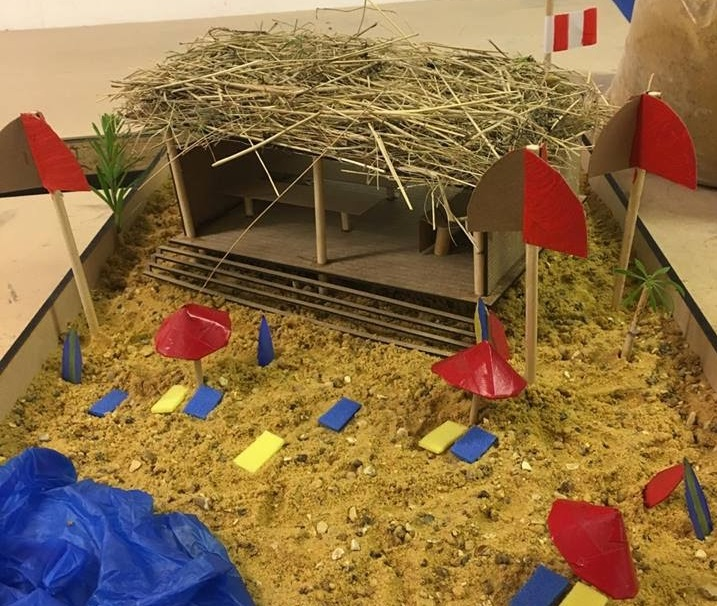
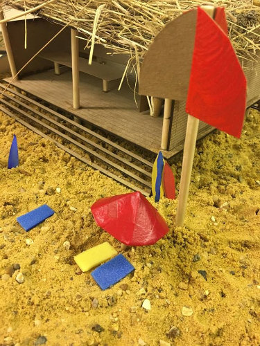
Skills used
Finite Element Analysis
Meticulously testing a brake disc and iterating to find the most efficient solution
For this module, I was given the task of choosing something to analyse using the features offered by solidworks simulations, whatever item or situation I chose to do, we had to optimise it by making small changes and giving evidence that these changes were improving the item.

I decided to create a bike brake disc, it is a common issue in the professional biking industry that brake discs can overheat and/or become deformed due to the excessive heat, once this happens the biker is at risk and could suffer injuries. I wanted to consider the issue to see what factors could decrease the likelihood of this happening.
Most brake discs currently being made must fit the standard bike, so typically they have a uniform; size, thickness and material. The main factor that could be changed was the pattern of the brake disc.
To create a worst-case scenario, I calculated the energy that would be applied to the brake disc if a man that weighed in the 95th percentile going a certain speed and stopped within 3 seconds. I created a simple brake disc with the correct dimensions and a simple pattern and applied this energy to the outer edge of the brake disc, thus simulating the brake pads closing on the brake disc. With a few additional figures, I created an accurate transient model of how the brake disc is heated up and cools over a period.
I conducted 2 other simulations on each model; displacement (stress) test and a bucking test. These were both important simulations because the displacement test would show if the brake disc would deform and if it did, where it would deform and how much by. Buckling is the most extreme thing that could happen but would be a huge risk factor, if an object reaches a point of too much stress it will buckle and instantly collapse, if this happened to a bike the rider would more than likely be injured, to make sure these designs would be safe I implanted a safety factor, if the result doesn’t at least meet the safety factor it would be a failure and unsafe.
By changing the pattern, I could channel where heat would escape from and reinforce areas that would be under the greatest stress to create a well-designed brake disc.
Skills used
Embedding Micro Controllers
A bike light that has 4 unique light modes created with the use of coding and electronics.
This module required me to learn an entirely new set of skills. We were tasked with creating a bike light, specifically; the coding required to make it do several different things, the electronics required to make it work and the inclusive design which was considering how it would all fit together and be securely contained within a box.
I was given an Arduino to use which is effectively a small programmable computer. If you program something correctly and wire it correctly with the right components it can perform an enormous number of simple tasks.
Powered by an ATMega328, I had to program a high-powered LED to have 4 separate modes. I accomplished this using different cases; the first case was keeping the high-powered LED on at full light level. The second required a light dependant resistor that would alter the light level of the LED based on the ambient light level in the room. The third case was keeping the LED flashing between 1hz and 4hz, and the fourth needed to flash at a drastically different rate to the others. To pass a confidence test, I used a standard green LED. Once the power was applied to the circuit it would blink 3 times before stopping, thus showing that the software was working. One of the most important things I had to consider was restricting the current using resistors to protect each component used while still allowing enough current around the system to function nominally.
I then had to move the ATMega328 off the Arduino and create a circuit that would allow everything to work as if it was still attached to the Arduino; capacitors and crystals made this possible. Once the circuit was made I had to create an enclosure, the important thing was to make each component secure including; the confidence LED, high powered LED, LDR, battery pack and the main circuit board. Each component had to be in an appropriate location that made logical sense and exposing the components necessary, such as having the high-powered LED pointing forwards.
Skills used
Ergonomic Bespoke Pen
Beautifully hand carved; executive, ergonomic oak wood pen
The client for this project works at a job that requires constant writing. He complained that the ball point pens available including, the ones designed for comfort didn’t help and writing could be painful over long periods of time. I was asked to make a pen that looked executive whilst being comfortable to write with.
Based on the users likes and dislikes, I decided to create a wooden pen and hand carve it specifically to give him the best experience. To do this, I studied how people interact with pens and what causes the discomfort. Typically, it came down to how people gripped the pen. Pressure points caused the discomfort. To combat this, I recorded how my client used his pen and created a shape that would increase the amount of surface area in contact with his fingers to lessen to burden on each specific point under stress.
The choice of oak allowed me to carve a free-flowing shape and the use of wood made it look and feel more organic. It also has useful properties such as being strong, allowing it to sustain a fall without being damaged and the overall look of oak is stunning and executive.
After filing and sanding the pen down as smooth as possible, I added a Beeswax finish applying numerous coats to achieve the smooth, glossy finish which was aesthetically pleasing and less likely to irritate the user’s hand.
Skills used
About Me
My name is Aaron Lowe and I am studying Product Design with Professional Experience, at Brighton University. Previously, I studied Design Technology at The Kings School, Grantham where I first discovered how interesting the subject could be. I’m always looking forward to every new project and I get totally engrossed in the entire process from; initial research and design all the way through to completion of the finished product. I find innovation extremely exciting and with every project I try to bring something new and interesting to make the product unique. I specialise in model-making and the use of Solidworks. I am constantly working on improving my skills and am currently focussed in the area of sketching. I can’t wait for my next challenge!